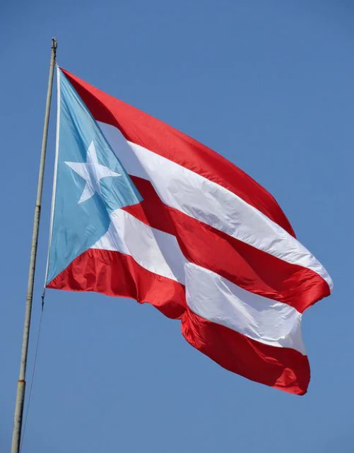
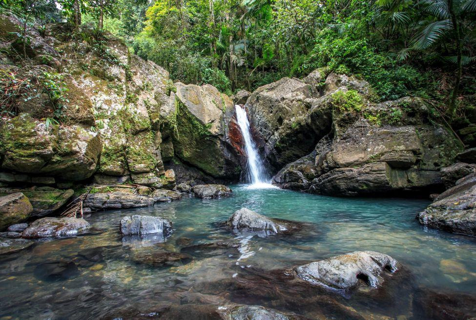

- 
- 
Who Am I?
My name is Ailani Borges Lopez. I'm a third-year student at the University of North Carolina at Charlotte majoring in Computer Science with a concentration in Software Engineering. A bit about me is that I'm a proud Puerto Rican woman who graduated as both valedictorian of her class at Harper Middle College and with an associate's in biological science from CPCC. I joined the middle college program to pursue my high school diploma and associate's, but fortunately did not feel close to the end of my academic journey. My next course of action was to transfer to UNC Charlotte to pursue my bachelor's. Originally my plan was a degree in biology, but on a slight curiosity about tech took an intro course into computer science and instantly fell in love. My change in major led me to the exciting world of tech, programming, and a community that's continuously evolving. Yet, I have not forgotten my roots in biology. I still carry the ability for analytical thinking, academic writing, and the ability to take on rigorous work. A dream of mine is to return to Puerto Rico and work alongside the scientists and engineers that work tireleesly to conserve the unique ecosystem of the island.